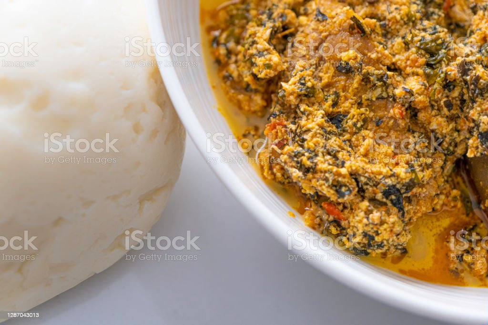

Egusi Soup

How to make egusi soup
Egusi soup is a Nigerian soup made with egusi seeds, tomatoes, and spices. It is a popular soup in Nigeria and is often served with fufu.
Ingredients
- 1 cup egusi seeds
- 1/2 cup palm oil
- 1/2 cup tomatoes
- 1/2 cup onions
- 1/2 cup bell peppers
- 1/2 cup carrots
- 1/2 cup celery
- 1/2 cup garlic
- 1/2 cup ginger
- 1/2 cup scotch bonnet pepper
- 1/2 cup salt
- 1/2 cup water
Instructions
- Soak the egusi seeds in water for 30 minutes.
- Blend the tomatoes, onions, bell peppers, carrots, celery, garlic, ginger, and scotch bonnet pepper.
- Heat the palm oil in a pot and add the blended ingredients. Stir and cook for 5 minutes.
- Add the egusi seeds and salt. Stir and cook for 5 minutes.
- Add the water and stir. Cover and cook for 20 minutes.